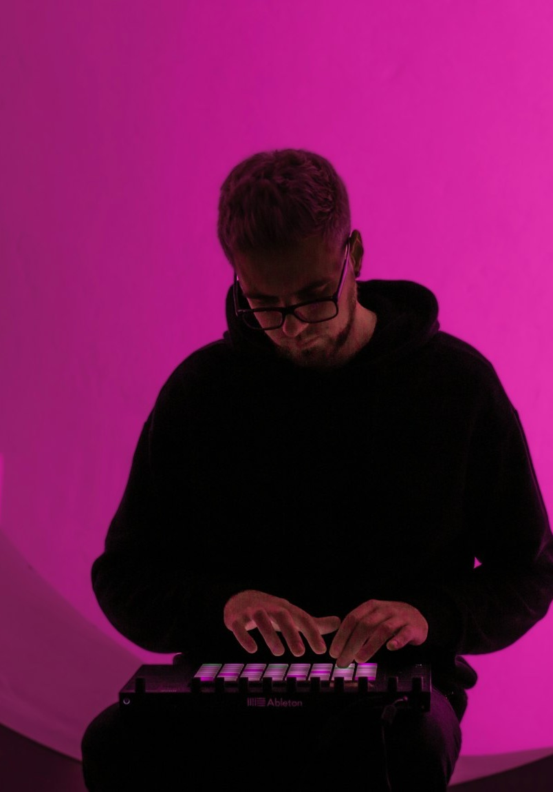
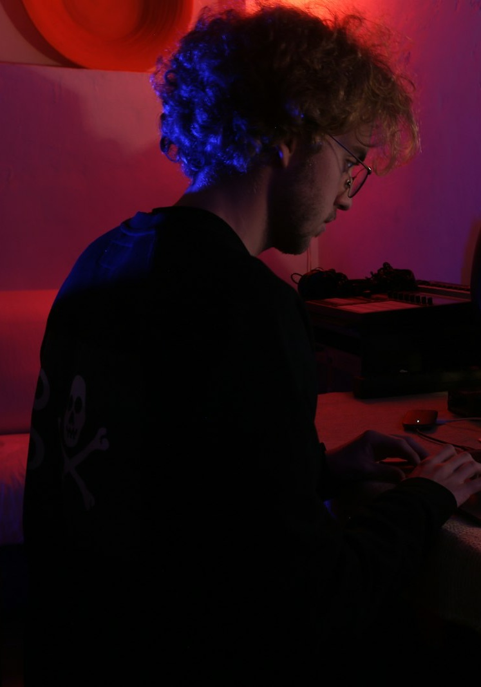

PRODUCTION
AUDIO/VIDEO PRODUCTION
SOUND
Vocals, instruments and performances captured with clarity.

Ideas developed into melody, harmony and arrangement.

Original beats shaped around the artist and the track.
Mixing and mastering that bring the record into focus.


VISUAL
FILM · PHOTOGRAPHY · EDITING · VFX · COLOR · MOTION
Sound meets visual —
Ideas In good hands.
- info@grmstudio.music
- Phone
- +381 63 646 5666
- Address
- Blagoja Parovića 19a, Beograd